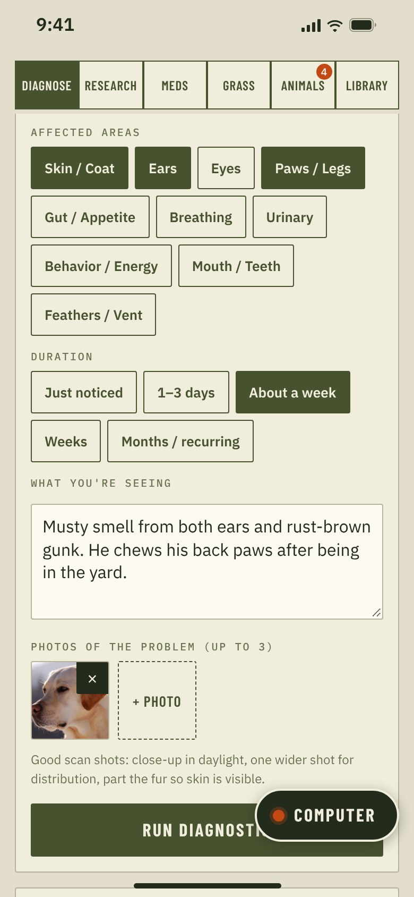
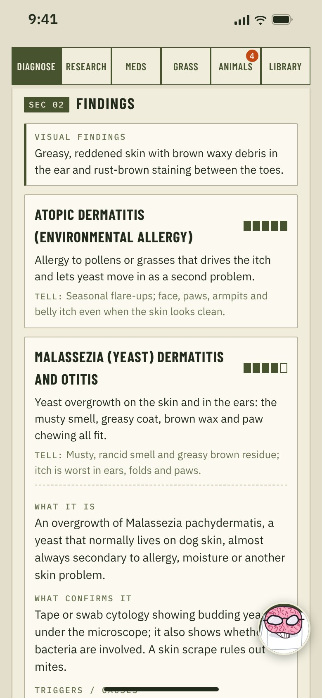
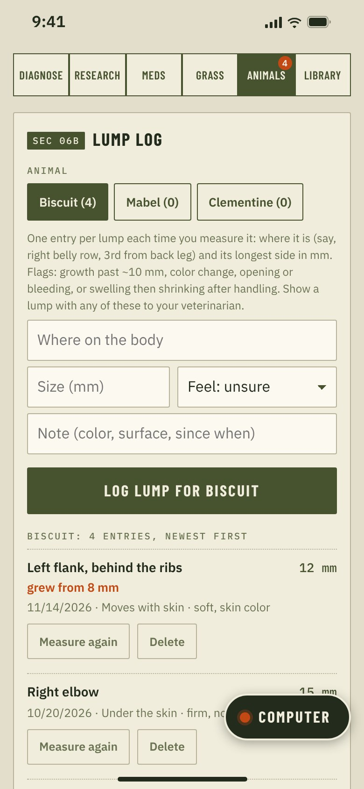

Rooststead™
Field Vet: a home animal care manual for dogs, cats, poultry and livestock
by ANGEL TECH™
Coming to the App Store for iPhone and iPad



What it is
Rooststead is a home animal-care manual for people who keep dogs, cats, poultry and livestock. Its screens call the manual Field Vet. You describe what you are seeing, and it gives you a clear reference answer to read before you decide what to do and when to call a veterinarian.
Rooststead is animal-care reference information. It is not a veterinarian, and it does not diagnose or treat your animal. Its answers are written by an AI system and can be wrong.
- Confirm every dose and drug with the product label and a veterinarian. Prescription (Rx) items need a veterinarian’s prescription.
- In an emergency, call a veterinarian or an emergency clinic now.
- For animals only, never for people.
The Terms of Use say this in full.
Lookups
- Diagnose: pick the animal, mark the areas affected, say how long it has been going on and describe it. Attach up to three photos. You get the conditions that may fit, how closely each one fits and what tells them apart, with signs of an emergency flagged.
- Protocols: a step-by-step care reference for a condition: what it is, what confirms it, likely causes, the steps in order, products, how long it should take, when to escalate and how to prevent it.
- Field Computer: ask anything in plain words. From your own records it answers on your device at once, with no connection and without using a lookup: which lumps grew, conversions and sums, due dates and hatch dates. Anything else goes out as a lookup that uses the animal’s record and lump log.
- Research: ask an animal-care question in plain words and get a short summary, the key points and the cautions.
- Meds: a medication reference by category, and a lookup of any product by name. Each entry says whether it kills, only suppresses or is supportive, and whether it is sold over the counter or needs a prescription.
- Grass: a grass and yard guide for your species and region (allergy, awn, toxic or safe), and a lookup of any plant by name.
Lookups are answered by Rooststead’s server, which passes them to Anthropic’s Claude, an AI system, to write the answer. Before your first lookup the app shows what will be sent and asks you to agree. Some answers come with reference photos from Wikimedia Commons, shown with credit.
Your records
- Animals on file: each animal’s species, breed, age, weight, allergies and notes, so answers fit the animal in front of you.
- The lump log: where each lump is, its size, how it feels and a note, with the date.
- The Tow-it-in list: a built-in short list of problems that should not be handled at home, with why and how fast to act.
- The library: file any answer and read it again later.
- Backup and restore: make a backup of your records and load it again later.
Your records work with no connection and stay on your device. There is no account.
Free, and Rooststead Pro
Rooststead is a free download.
Free, always
$0
- Animals on file, the lump log, the Tow-it-in list, the library, backup and restore, and settings
- 3 free lookups for each install, in total
Rooststead Pro
$19.99 a month or $149.99 a year
- Up to 50 lookups a day
- No free trial
The 3 free lookups do not come back once they are used. Rooststead Pro is an optional subscription sold through Apple. It renews automatically until you cancel it in your Apple Account’s subscription settings. Prices are in US dollars for the United States; the price in your country is shown in the app before you buy. The 50 lookups a day are a fair-use cap that starts again at midnight UTC. Reference photos come with a lookup and do not count as one. The Terms of Use have the details.
Private by design
No account, no ads and no tracking. What you save stays on your device. A lookup is sent only after you agree in the app, and our server keeps no lookup text, photos or answers. To make the answers better it keeps counts of what is looked up, tied to no one, and you can turn that off in Settings. The Privacy Policy says exactly what is sent and to whom.
More
Privacy Policy · Terms of Use · Support
Last updated November 22, 2026